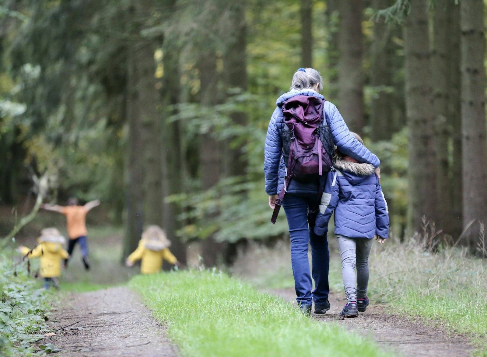
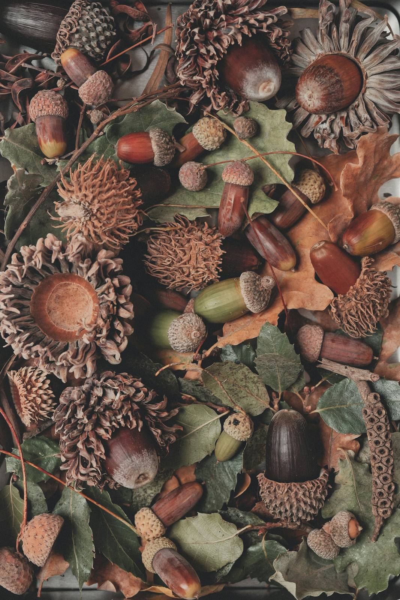
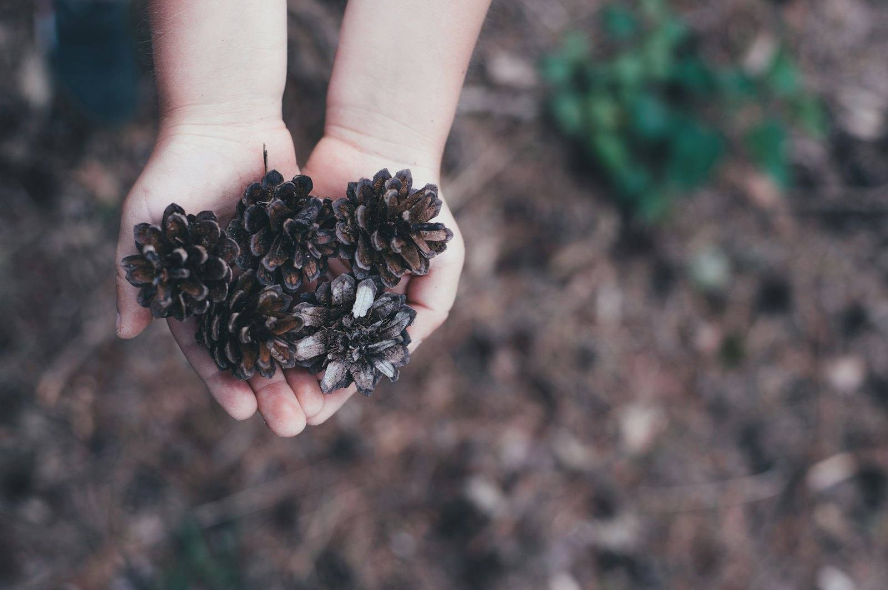

Buitenprogramma voor BSO's in de Gooi en Vechtstreek
Buitenspel waar ze thuis over vertellen. Zonder voorbereiding.
Ik maak bosmiddagen en seizoensdozen op basis van scouting en survival. Ze zijn uitgewerkt tot op de minuut, met materiaal, veiligheidsprotocol en een plan B. Jouw team hoeft alleen nog naar buiten.
placeholderfoto, eigen beeld volgt
Gecertificeerde scoutingleiders
Uitvoering samen met lokale scoutinggroepen
Elk programma een draaiboek
Tijdlijn, materiaallijst, veiligheidsprotocol en plan B
Geen gegevens van kinderen
Ik verwerk ze niet, ook niet in formulieren
Vrijblijvend eerste gesprek
We kijken samen of het bij je vestiging past
Waarom Klein Wild
Een programma is meer dan een spelletje in het bos.
BSO's willen meer uitdaging en variatie buiten. Maar een medewerker met te weinig collega's heeft geen tijd om zelf iets te ontwikkelen. Daarom lever ik programma's die al zijn uitgezocht. Ze hebben een vaste opbouw, aanpassingen per leeftijd en een plan B voor als het regent of de groep onrustig wordt.
Elk draaiboek komt uit een middag die ik zelf heb gedraaid. Wat daar misging, staat er ook in.
Bekijk de tien programma's
Aanbod
Drie manieren om naar buiten te gaan
Begin met een begeleide middag. Wil je daarna zelf verder, dan neemt je team het over met de seizoensdoos.

Begeleid, 3 uur
De bosmiddag
Scoutingleiders draaien een volledig programma in een bos bij jou in de buurt. Jouw medewerkers kijken mee en zien hoe het werkt.
Zo verloopt een middag
Zelf doen, per kwartaal
De seizoensdoos
Eén doos per vestiging per kwartaal, met zes tot acht uitgewerkte buitenactiviteiten, materiaal, instructiekaarten en veiligheidsprotocol.
Wat er in de doos zit
Los te bestellen, landelijk
Speldozen en draaiboeken
Eén activiteit, kant-en-klaar. Voor wie eerst wil proeven of buiten de regio zit.
Bekijk de programma'sWat je concreet krijgt
3uur
per bosmiddag, met een vaste opbouw van aankomst tot slotritueel
6tot 8
uitgewerkte activiteiten in elke seizoensdoos, ongeveer één per twee weken
10programma's
elk met een eigen draaiboek, van Het Belegerde Kasteel tot De Nachtwacht
4tot 12 jaar
de meeste programma's zijn gemaakt voor kinderen van 8 tot 12


Hoe het werkt
Van eerste gesprek tot bosmiddag
-
01
Kennismaken
We bespreken je vestiging, je groepen en het bos bij jou in de buurt. Vrijblijvend.
-
02
Programma kiezen
Ik stel een programma voor dat past bij leeftijd en seizoen. Je krijgt het draaiboek vooraf, zodat je weet wat er gebeurt.
-
03
Naar buiten
De scoutingleiding draait de middag. Jouw medewerkers lopen mee en kunnen het programma daarna zelf.
Doorlooptijd van gesprek tot middag: [doorlooptijd volgt]

[Testimonial volgt. Alleen met echte naam, functie en organisatie van een vestigingsmanager of pedagogisch medewerker.]
[Naam], [functie], [organisatie]